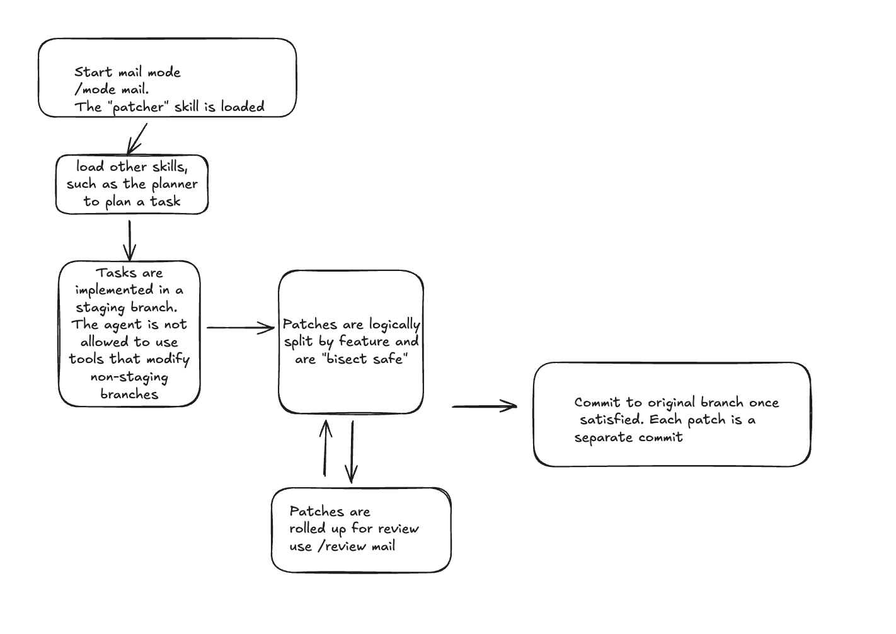

Key Features
- 🎭 Personas & Skills: Define global agent instructions via
AGENTS.mdand extend capabilities using modular, on-demandSKILL.mdfiles. - 📖 Ledger-Driven: All interactions and tool calls are stored in SQLite for persistence and auditability.
- 📝 Session Scratchpad: Maintain a per-session planning buffer with
/scratchpad edit,/scratchpad save, andread_scratchpad/write_scratchpadtools. - 🎛️ Context Control: SQL-backed, per-session accordion history preserves an append-only prompt prefix between resets, so sessions can grow independently while retaining cache-friendly context.
- 🪗 Accordion context: Use
/context <retain_groups> [watermark_tokens]to grow a cache-friendly prompt prefix, then reset to complete recent groups after the latest actual prompt usage reaches the watermark (defaults:2,350000). Tool results remain full fidelity up to their configured per-result limit. - Mail workflows: Use docs/mail_mode.md for a review-first patch workflow. Manual code review remains the authority while each small, discrete patch stays independently reviewable, verifiable, and suitable for git bisection.
- Models: Supports OpenAI-compatible Responses endpoints and ChatGPT Plus/Pro OAuth.
- Hotwords: Activate a skill for one turn with
hey <skill> <query>.
🚀 Quick Start
Download
The project ships Linux x86-64 and macOS binaries every release. You can directly use them.
📋 Prerequisites
- C++17 compiler (Clang/GCC)
- Bazel (Bazelisk recommended)
- Git: Targets must be valid git repositories. Usually, a git add and an initial commit is sufficient to trigger all the git enabled features.
🛠️ Build and Install
# Build the binary
bazel build //:std_slop
# Optional: Add to your PATH
cp ./bazel-bin/app/std_slop /usr/local/bin/⌨️ Usage
std::slop works best when it can track a specific project. Initialize a git repository and run it from the root:
mkdir my-project && cd my-project
git init
std_slopFor quick one-off tasks, you can use Batch Mode:
std_slop --prompt "Refactor main.cpp to remove all unused includes"Batch mode accepts exactly one instruction source, and optional piped stdin is prepended as context:
std_slop --prompt_file task.md
ls *.cc | std_slop --prompt "sort these files in alphabetical order"Use exactly one instruction source: --prompt or --prompt_file. Piped stdin is optional context. Batch mode uses an in-memory database unless --prompt_db is set.
For scripts, --output=json writes run metadata:
std_slop --prompt_file task.md --output=json | jq -r .assistant_messageThe JSON object contains ok, session, model, active_skills, assistant_message, structured_output, error, and duration_ms.
Use --format or --format_file to require a JSON Schema-constrained final value. The raw validated value is the only stdout payload, so structured output cannot be combined with --output=json:
std_slop --prompt "Extract the name" \
--format '{"type":"object","properties":{"name":{"type":"string"}},"required":["name"],"additionalProperties":false}'
cat incident.log | std_slop \
--prompt_file summarize_incident.md \
--format_file incident_summary.schema.json \
--model gpt-5.4-mini:high \
--session incident-2026-07-19 \
--prompt_db /tmp/slop-incident.dbThe supported schema subset is a root object plus nested object, array, string, number, integer, boolean, and null types; properties, required, boolean additionalProperties, items, and non-empty enum arrays.
Read the Walkthrough first for the recommended getting-started flow, authentication setup paths, config.ini setup, docs-folder navigation, and llm_query subquery/persona configuration. Then use docs/README.md as the docs index for deeper reference material.
Authentication Quick Notes
- OpenAI-compatible: set
OPENAI_API_KEYor put it in~/.config/slop/config.ini - OpenAI-compatible API key: set
OPENAI_API_KEY, optionally combine with--openai_base_url, or put both inconfig.ini - OpenAI OAuth (Responses API): run
std_slop --fetch_openai_oauth_tokenorstd_slop --fetch_openai_oauth_device_token, then start with--openai_oauth
⚙️ Configuration
You can configure std::slop using environment variables or a configuration file.
Configuration File
The agent looks for a configuration file at ~/.config/slop/config.ini. You can also specify a custom path using the --config flag. It is STRONGLY RECOMMENDED that slop.db lies in a central directory or outside the codebase. It generates 2 other artifact files, at least ensure that your .gitignore contains this. The context ledger is completely stored in the database, and it can inadvertently capture information from your environment if you are not careful. Eg Environment Variables.
For a getting-started walkthrough that covers config methods end-to-end, see docs/WALKTHROUGH.md.
[slop]
model = your-model-name
# OR
openai_api_key = sk-...
openai_base_url = https://api.openai.com/v1
# openai_oauth = true # optional: use OpenAI OAuth token + Responses API
# openai_oauth_token_path = /custom/path/chatgpt_plus_token.jsonSee docs/example_config.ini for a full list of options.
Configure LLM sub-agents (specialized llm_query tools)
You can define config-based llm_query specializations as first-class tools. This is useful for role-focused delegation (for example: code review, repo exploration) without rewriting prompts each time.
Add one INI section per specialization using the llm_tool_ prefix:
[llm_tool_code_review_llm]
system_prompt_patch = You are a strict code reviewer focused on correctness and regressions.
session_id = code_review
skill = code_reviewer
context_window = 8After startup, call the specialized tool directly by name (for example llm_tool_code_review_llm) with a query argument.
For a complete multi-specialization example, see docs/example_subqueries.ini. Detailed behavior and policy constraints are documented in docs/impl/subqueries.md.
Environment Variables
SLOP_DEBUG_HTTP=1: Enable full verbose logging of all HTTP traffic (headers & bodies).
Walkthrough
Build
git clone https://github.com/hsaliak/std_slop.git
cd std_slop
bazel test //...
bazel build //...
cp bazel-bin/app/std_slop "$HOME/bin/std_slop"Prebuilt macOS and Linux x86-64 binaries are available from the releases page.
Authentication
Choose one path:
- API key: set
OPENAI_API_KEY. Setopenai_base_urlfor an OpenAI-compatible endpoint. - OpenAI OAuth: run
std_slop --fetch_openai_oauth_tokenorstd_slop --fetch_openai_oauth_device_token, then start withstd_slop --openai_oauth.
For configuration examples, copy docs/example_config.ini to ~/.config/slop/config.ini:
mkdir -p ~/.config/slop
cp docs/example_config.ini ~/.config/slop/config.ini
std_slopCLI settings override INI settings, which override environment variables, which override defaults. See OAUTH.md for OAuth details.
First Run
Run one prompt:
std_slop --prompt "Summarize the repository structure"Or launch the interactive UI:
std_slopUseful commands:
/models
/help
/session switch scratchSubquery Tools
INI sections named [llm_tool_<name>] register specialized llm_query tools. See example_subqueries.ini and impl/subqueries.md.
Next Steps
- README.md: command overview and batch mode.
- OAUTH.md: OAuth details.
- mail_mode.md: patch-based workflow.
- README.md: documentation index.
std::slop Session Architecture
Sessions are implemented as a partitioned ledger in SQLite. Every interaction is tagged with a session_id.
Conversation Isolation
Sessions provide isolation of history.
- Mechanism: The
messagestable includes asession_idfor every entry. - Prompt Construction: The
Orchestratorqueries only messages associated with the activesession_idwhere status is not 'dropped'. - Result: The LLM has no visibility into other sessions.
Model Changes
Session history is retained when the configured model changes. Provider response normalization is handled by the Responses orchestrator.
Shared & Preserved State
While history is isolated, certain configurations are global or preserved in memory when switching.
Persistence Comparison
| Feature | Scope | Persistence |
|---|---|---|
| Message History | Session | SQLite (messages table) |
| Context Window Size | Session | SQLite (sessions table) |
| Active Skills | Process | In-memory (Preserved on /session) |
| Request Throttle | Process | In-memory (Preserved on /session) |
| Tool Registry | Global | SQLite (tools table) |
| Skills Registry | Global | SQLite (skills table) |
Mechanics
Switching Sessions
The /session switch <name> command updates the internal session pointer.
- Creation: If the session name does not exist, it will be implicitly created upon the first message sent to the LLM (when the first record is written to the ledger).
- What Changes: The history retrieved for prompt assembly.
- What Stays: Your currently activated skills and any
/throttlesettings. This allows you to quickly pivot to a new "thread" or project without re-configuring your preferred persona or agentic behavior.
Listing Sessions
Use /session list to see all sessions that have stored history.
Starting fresh
To completely clear your context for a new task, simply /session switch to a new name (e.g., /session switch project_part_2). This is the recommended way to start fresh. Alternatively, you can use /session clear to wipe the current session's history while remaining in that session.
Removing Sessions
The /session remove <name> command permanently deletes a session and all its associated data (history, token usage stats, and context settings).
- If the current active session is removed, the system automatically switches to
default_session.
Cloning Sessions
The /session clone <name> command creates a complete "branch" of the current session.
- What is copied: All message history and token usage history.
- Uniqueness: The target name must not already exist.
- Use Case: This is suitable for exploring different "branches" of a task or saving a stable state before a complex change. After cloning, you are automatically switched to the new session.
Clearing current Session
The /session clear command deletes all data (history and token usage stats) for the current session. This is useful if you want to restart a task without changing the session name.
Persistence
The ledger is stored in slop.db and persists across restarts. Resume a session by providing its name at startup or via /session.
Sessions in Batch Mode
Batch mode accepts --prompt or --prompt_file and uses --session or default_session. It uses an in-memory database unless --prompt_db is set.
--output=json writes run metadata. --format or --format_file requests schema-constrained output and writes the validated JSON value to stdout; it cannot be combined with --output=json. See the root README for examples and the supported schema subset.
Summary
| Feature | Isolated per Session? |
|---|---|
| Message History | Yes |
| LLM Context Window | Yes |
| Tool Registry | No |
| Skills Registry | No |
| Active Skills | No (Preserved on switch) |
| Request Throttle | No (Preserved on switch) |
| FTS5 Search Index | No |
Context Management in std::slop
std::slop uses append-only accordion history. Messages are grouped by group_id, so a user request, its tool calls, and its final assistant response remain together.
1. Assistant History State
The system prompt asks the assistant to include a ### STATE summary in its responses. That summary remains in the corresponding assistant message in conversation history and is the only state supplied to later model requests. std::slop does not extract, validate, or duplicate the summary into a separate system-prompt anchor; if the assistant omits it, the history simply has no such summary for that turn.
- Text Messages: User and Assistant messages containing only text are preserved across model switches. They are automatically re-parsed into the target model's format.
- Tool Isolation: Messages with a
roleoftoolor astatusoftool_callare only included if theirparsing_strategymatches the currently active one. - Rationale: Providers (like Google and OpenAI) use vastly different JSON schemas and sequences for tool interactions. Attempting to "translate" a complex tool chain from one provider to another often leads to hallucinations or API errors. Isolation ensures that the LLM only sees tool interactions it is capable of understanding and continuing.
This approach balances cross-model conversational continuity with the strict technical requirements of tool-calling APIs.
Centralized Message Parsing
To handle the divergent JSON schemas between providers, std::slop uses a centralized MessageParser class (core/message_parser.h). This utility:
- Extracts Tool Calls: Parses tool call JSON from the OpenAI Responses API format.
- Extracts Assistant Text: Retrieves the text content from tool_call messages for display purposes.
- Strategy-Aware: Uses the
parsing_strategyfield to determine the correct parsing logic.
This centralization eliminates heuristic JSON sniffing and ensures consistent tool call extraction across the UI and orchestrator components.
Dynamic Tool Truncation
To maximize context efficiency, the system applies differential truncation limits to tool results based on their recency and group status. These limits are configurable via the TruncationSettings struct.
- Active Group (Recent - Full Fidelity): The 5 most recent tool results in the current conversation group are kept at up to 5000 characters. This ensures the LLM has full context for immediate, iterative tool loops.
- Active Group (Degraded): Any tool results in the active group beyond the 5 most recent are truncated to 1000 characters. This prevents a single long-running turn with many tool calls from consuming the entire context window.
- Inactive Groups (Compression): Once a conversation group becomes inactive (the turn has finished and a new user prompt has started), all tool results in that group are truncated to 300 characters.
- Retrieval Hints: All truncated results are appended with a hint:
... [TRUNCATED. Use query_db(sql="SELECT content FROM messages WHERE id=<ID>") to see full output]. This allows the model to retrieve full technical detail on-demand via SQL.del to surgically retrieve full technical detail from its own history if a previous task needs re-investigation.
Rationale: The specific details of a tool's output are essential while the task is being performed. However, once the task is complete, the essence of the result is usually sufficient. Reducing the limit to 300 characters while providing an explicit recovery path (via query_db) offers the optimal trade-off of context efficiency and technical depth.
3. Assistant-Managed State Tracking
The system prompt allows the assistant to summarize technical progress in its response history. The current accordion epoch determines how long those summaries remain available to later requests.
The "Context Layers" Approach
When building the prompt, the Orchestrator assembles multiple layers of context:
- System Prompt: The hard-coded base instructions for the assistant.
- History Guidelines: Instructions for the LLM on how to interpret optional state blocks in history.
- Assistant State (
### STATE): A summary retained in the assistant message that produced it. - Conversation History: The sequential messages retrieved via the rolling window.
Optional State Summaries
The assistant may manage state summaries autonomously:
- History: The system prompt allows the assistant to include a
### STATEblock. When present, it remains in the assistant response in conversation history.
The assistant-managed summary is not extracted or injected separately. It is available only while the assistant message containing it remains in the selected accordion history.
Optional State Format
### STATE
Goal: [Short description of current task]
Context: [Active files/classes being edited]
Resolved: [List of things finished this session]
Technical Anchors: [Ports, IPs, constant values]5. Historical Context Retrieval (SQL-based Retrieval)
Unique to std::slop, the agent has the capability to query its own message history directly via SQL when the rolling window is insufficient.
Mechanism
The agent is instructed to use the query_db tool to search the messages table. This allows for precision retrieval of old information that has fallen out of the rolling window without bloating the context with irrelevant data.
Guidelines for the Agent
- Recency Bias: Queries should generally use
ORDER BY id DESCto find the most relevant recent information. - Data Integrity: The agent must ignore records where
status = 'dropped'to avoid retrieving "undone" or invalid history. - Selective Retrieval: The agent can search by
role,contentkeywords, orgroup_id.
Example query the agent might use:
SELECT role, content FROM messages
WHERE status != 'dropped' AND content LIKE '%refactor plan%'
ORDER BY id DESC LIMIT 5;6. Manual Context Intervention
Users have several tools to manually prune or repair the context:
The /undo Command
The /undo command is a high-level shortcut for:
- Identifying the most recent message group (
group_id). - Deleting all messages in that group from the database.
- Rebuilding the next prompt from the remaining history.
This is the primary way to "roll back" an interaction that went wrong or to retry a prompt with different instructions.
The /message remove <GID> Command
For more granular control, users can remove any specific message group by its ID.
Evolution: Why we removed FTS-Ranked Mode
Earlier versions of std::slop included a FTS_RANKED mode that used hybrid retrieval (BM25 + Recency) via SQLite FTS5. While theoretically robust for long sessions, it was removed for the following reasons:
- Stop-Word Pollution: Common conversational phrases like "continue," "next," or "go on" acted as high-relevance search terms. This caused the system to pull in random historical fragments where those words appeared, filling the context window with irrelevant noise.
- Narrative Fragmentation: Non-sequential retrieval often confused the LLM. If the "middle" of a technical implementation was missing because it didn't match the current keyword, the LLM would hallucinate missing details or repeat work.
- Complexity vs. Value: Addressing the noise would have required complex stop-word filtering and query expansion logic. Instead, we chose to simplify. By focusing on a sequential window and a robust, LLM-managed
### STATEblock, we ensure that critical "technical anchors" are preserved without the unpredictability of keyword-based retrieval.
The current strategy prioritizes coherence (sequential history) and authoritative summary (the state block) while allowing for agent-driven precision retrieval via SQL.
Token Accounting
Token counts in std::slop (displayed as · NNN tokens) do not represent the isolated cost of a single message, but rather a snapshot of the session's total weight in the LLM's memory at that specific moment.
The Snapshot Principle
Every interaction is stateless. The orchestrator sends the selected accordion history with each request. The reported token count is the sum of:
- Prompt Tokens: The "Input" (System Instructions + Conversation History + New User Message).
- Completion Tokens: The "Output" (The LLM's new reasoning text and/or tool calls).
Behavioral Characteristics
- Growth: As long as the session history is preserved, the token count will strictly increase turn-by-turn as the history "Prompt Tokens" grows.
- Intra-Turn Consistency: In a single turn containing multiple tool calls (Parallel Tool Calling), every tool call and assistant message will display the same token count. This represents the weight of the entire interaction that produced those calls.
- Accordion Reset: Context is append-only within an epoch. When the latest successful provider prompt reaches the high watermark, the next generation resets history to the configured complete-group suffix and begins a new epoch.
Commands Reference
/context <N> [watermark]: Enable accordion context.Nis the number of most-recent interaction groups retained at reset; the watermark defaults to 350000 actual prompt tokens./context show: Display accordion settings and the exact assembled context that will be sent to the LLM. The output is human-readable and will automatically open in your$EDITOR(e.g.,vim,nano) if it exceeds terminal height.- If a provider still rejects context length, std::slop resets once and retries generation once. Set the watermark near 80% of known model capacity or reduce
Nif that retry also fails. /undo: Shortcut to remove the last interaction./message list [N]: List the lastNinteraction groups with token usage information./message show <GID>: View the full content of a specific interaction group./message remove <GID>: Permanently deletes a specific message group from the database./messages: Alias for the/messagecommand.
The Mail Mode: Patch-Based Development Workflow
This document describes the manual Mail Mode workflow for std::slop.
Audience: users who want explicit control over staging branches, patch commits, review, and finalize. Related docs: README.md, ../README.md
The automated-mail-mode skill can execute this workflow with minimal interruption. Finalization still requires explicit human approval.
1. Core Philosophy
Mail Mode treats the agent as a remote contributor. Instead of making ad hoc changes directly on main, the agent builds a reviewable patch series on a staging branch. It is ideal when manual code review still happens: the human reviewer remains responsible for correctness and approval, while the agent keeps the implementation in small, discrete, reviewable patch sets.
Each patch should represent one logical change, carry a clear rationale, pass the relevant checks on its own, and leave the repository in a usable state. This keeps the series easy to review, safe to reroll, and useful for git bisect when a regression is found. Mail Mode automates staging, patch metadata, verification, rerolls, and finalization; it does not replace manual code review.
2. High-Level Flow

- Create or switch to a staging branch under
slop/staging/*. - Implement a logical change.
- Commit it with
git_commit_patch(...). - Repeat until the series is complete.
- Run
git_format_patch_series(...)to review the series. - Review, reroll, and verify until the series is ready.
- Finalize with
git_finalize_series(...)after explicit approval of the reviewed HEAD.
3. Staging Branch Workflow
- Branching: Use
git_create_staging_branch(base_branch, name)to create or switch to a staging branch. - Small patch sets: Keep each commit focused on one logical change, independently reviewable and bisect-safe.
- Manual review: Review every patch for correctness, regressions, and design fit before approval; Mail Mode does not substitute for that judgment.
- Rationale: Use
git_commit_patch(summary, rationale)so each patch records why it exists, not just what changed. - Verification: Run a deterministic validation command for each patch before asking for review.
4. Review and Reroll
Review
- Use
/review mailto inspect the current series. - Use
/review mail <index>to inspect a specific patch. - Add
R:comments in the review buffer to request changes.
Reroll
- Use
git_reroll_patch(base_branch, index)to update a specific patch while preserving series structure. - Re-run validation after each reroll.
- Re-review the updated series before finalization.
5. Verification and Finalization
- Use
git_verify_series(base_branch, command)to validate every commit in the series. git_finalize_series(target_branch)merges the reviewed series and cleans up staging metadata.- Approval must match the current staging HEAD. If the series changes after approval, it must be approved again.
6. Tool Summary
git_create_staging_branch(base_branch, name)git_commit_patch(summary, rationale)git_format_patch_series(base_branch)git_reroll_patch(base_branch, index)git_verify_series(base_branch, command)git_finalize_series(target_branch)
7. Practical Tips
- Start with a clean working tree.
- Keep
slop.dband related SQLite artifacts outside the repository or in.gitignore. - Prefer several small, discrete patches over one large patch; each patch should be easy to review, verify, revert, and locate with
git bisect. - Use the same deterministic validation command for local verification and
git_verify_series(...).
Content is generated from the repository sources listed above. See the source files for the complete reference.